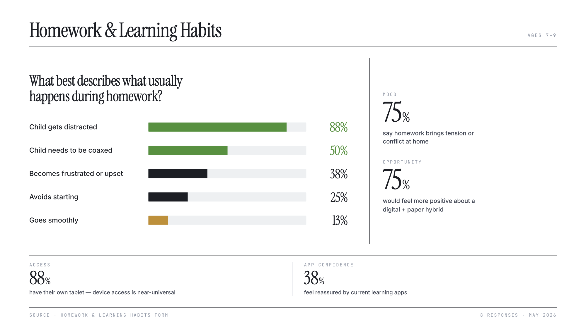
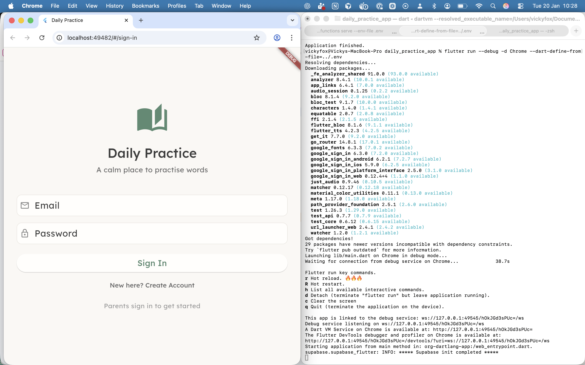

Little Desk started with a Monday morning observation: my daughter was resistant to her weekly spelling homework. So I built her something better — and used it as an excuse to go deep on what it actually means to ship an app with AI.
The market for children's learning apps is dominated by the Duolingo model: streaks, rewards, loss aversion, progress bars. These mechanics are addictive by design — and for young children, potentially counterproductive. The brief I set myself: an app that is calm, not addictive. One that treats the child as capable rather than in need of reward. And one that keeps pencil to paper — because the act of writing by hand is the point and not something to replace with a touchscreen.
Three bodies of research shaped my product thinking from the start. 1 – Growth mindset, which says that evaluative feedback actually reduces resilience after errors. 2 - Cognitive load theory proposes that young children have limited working memory and are especially vulnerable to visual noise. 3 - Self-determination theory, which suggests that external pressure shifts motivation from autonomy to compliance.
A parent survey I ran at the outset confirmed the tension: parents worried equally about screen time and about their children's motivation to learn.

I directed Cursor to write the app in Flutter and embedded my UX principles document directly into Cursor as a rules files, so that every code generation aligned with the overriding design rationale. I also encoded the linguistic rules for phoneme mapping as Cursor rules — so adding new words to the curriculum meant generating the correct grapheme-to-phoneme breakdown automatically.
I worked in weekly sprints — one hypothesis per sprint, live testing after each one. I also worked alongside an engineer partner, from whom I learned a significant amount about both the tooling and the process.

Testing with a real child on school mornings, surfaces things no process anticipates. Hardware logistics, font choices, the sequencing of a single button. Each sprint produced issues that I could address for the next version.

The testing revealed friction points, issues with the pacing, and moments where the child's behaviour diverged from what I'd expected. The value of the sprint structure was in the rhythm — one hypothesis per week, tested under real conditions, revised before the next Monday. "I love doing my spellings now" arrived on day two. That's the signal that made five more weeks of iteration worth it.

The app has been in weekly use since January 2026. The engagement shift compared to paper-only practice was immediate — "I love doing my spellings now" arrived within 24 hours of first use. Whether that enthusiasm holds over time is what the next phase of testing is for.